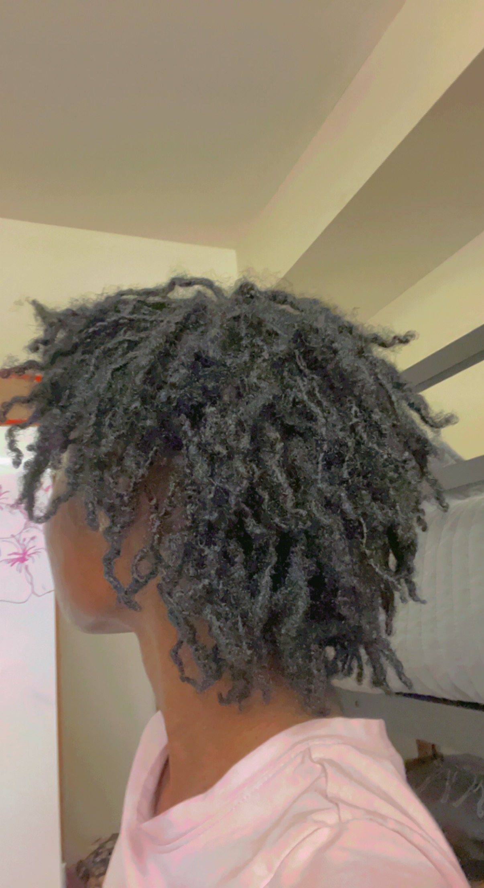

Embrace
Embrace
Common Misconceptions About Locs
- You cannot wash your locs
- Locs are permanent
- Waiting longer between loc maintenance = thicker locs
- Locs are not versatile
- You can only maintain your locs using one maintenance method
Depending on how you start your locs, it is generally advisable to wait 3-5 weeks before washing your
hair.
Washing your starter locs too frequently can cause unraveling, but unraveling can be fixed. As your
locs mature, you will be able to wash your hair regularly. Not washing your hair at all will have
detrimental effects on your hair; it can cause scalp issues and build-up that can develop into mold.
Locs are only permanent if you want them to be a permanent hairstyle. You can comb out or cut your
locs if you no longer desire to have them.
So, here's the thing: Retwisting or interlocking your hair too often will cause thinning at the loc and
roots. However, the same can occur if you wait too long between maintenance days. Locs will try to join
each other to become one loc (marrying) and separating them can be a very painful and damaging
process. In other cases, the loose hair cannot hold the loc attached to it, which can result in the
loc falling off.
Not true! For loc inspiration, check out our official Pinterest Board here: Pinterest Page
Though some are against this, you can maintain your locs using more than one method. I know several people with micro-locs and sister-locs who sometimes alternate between retwisting and interlocking without issue. With my first set, I alternated between the crochet method and palm rolling. I personally wouldn't
recommend it if you desire more uniform locs, but it is possible.